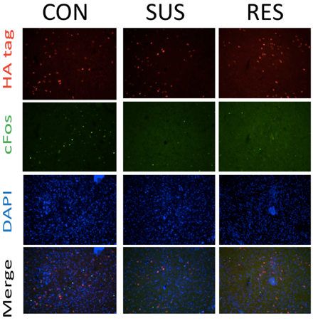
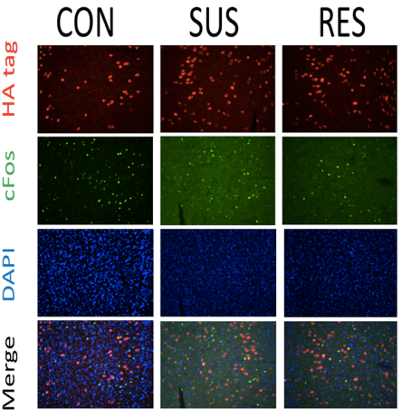
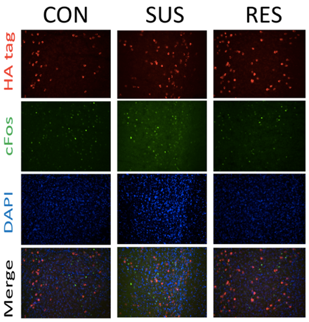

Nucleus Accumbens

Prelimbic Cortex

Infralimbic Cortex

Patterns of Neuronal Activity in Resilient and Susceptible Mice in the Medial Prefrontal Cortex and Nucleus Accumbens
Introduction. Depression is one of the leading causes of the global health burden and it has long been shown that the presence of life stressors often proceeds the onset of a major depressive episode (Üstün et al., 2004; Charney & Manjl, 2004). However, research has also demonstrated that most of those faced with adversity do not fall prey to psychopathologies, such as stress-related disorders or affective disorders (Yehuda, 2004; Vasconcelos et al., 2015). So, the question remains: what are the mechanisms, which underlie resiliency and susceptibility in response to life stressors? The present study investigates the presence of varying and distinct neuronal patterns of activity within resilient and susceptible mice.
Methods. 8-week old mice (intruder mice) were housed together and 6-month old retired breeders (agressor mouse) were individually housed. The intruder mice took part in a chronic social defeat paradigm, in which they were subjected to 10 daily sessions of social defeat (attacks) for 5-minutes with a aggressor mouse and subsequently housed together separated by a plexiglass divider. Intruder mice were exposed to a novel aggressor mouse each day. Following the 10 days, intruder mice took part in a social interaction task in which they explored an empty open field arena in trail one and an open field arena with a caged aggressor mouse in trail two. 24-hours after the social interaction test, the intruder mice were re-exposed to a social defeat with a novel aggressor mouse. 1-hour later, mice were anesthetized and perfused. Coronal sections were cut using a cryostat. Immunohistory chemistry was later peformed on all tissue.
Results. Broadly, we observed, in both the medial prefrontal cortex (mPFC) and nucleus accumbens (NAc), a pattern of increased neuronal activity during the initial chronic social defeat stress as compared to the stress re-exposure. Furthermore, we observed an increase in neuronal activity in the prelimbic (PL) cortex during the initial stressor and stress re-exposure in susceptible mice, which is consistent with previous research indicating that increased neuronal activity in the PL underlies fear expression (Corcoran & Quirk, 2007; Laurent & Westbrook, 2009).